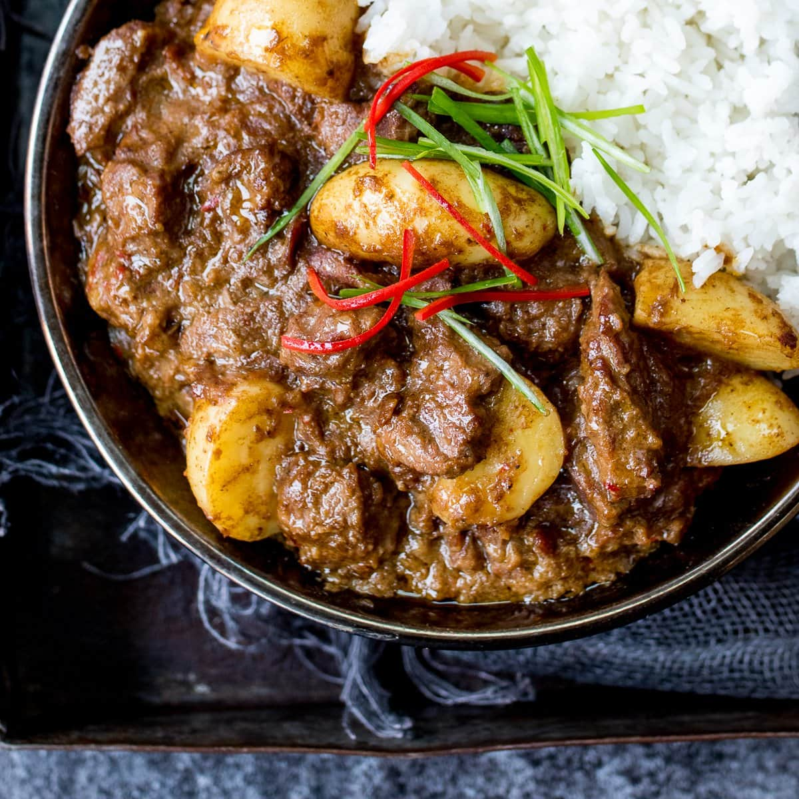

Massaman Curry

Massaman Curry
Traditional Massaman curry is a Thai curry that is delicious and will heat your belly and mouth right up!
Ingredients
- 2 lb bone-in beef short ribs (see note)
- 2 ½ cup coconut milk
- Half recipe of massaman curry paste or 5-6 Tbsp store-bought paste
- Water, as needed
- 2-3 Tbsp fish sauce
- 3 Tbsp palm sugar, chopped
- 2 Tbsp tamarind juice (a.k.a. tamarind concentrate or tamarind paste)
- 1 large white-flesh sweet potato, cut into big chunks (the orange flesh ones are not as good in this dish)
- 1/2 a large onion, cut into 1/2-inch strips
- ¼ cup roasted peanuts
- Jasmine rice for serving
Instructions
- Cut the beef off the bones and, if necessary, cut them down into large cubes.
- In a heavy bottomed pot, add just enough oil to coat the bottom and heat over medium high heat until very hot. Without crowding the pot, sear the beef in the oil until well browned on 2 sides (or you can sear it on 3-4 sides if you have the patience). Do this in as many batches as necessary.
- Once all the beef is seared, add it all back into the pot, along with the bones you removed.
- Add 1/2 cup of coconut milk and just enough water to keep everything submerged. Add 1 Tbsp of the curry paste, 1 Tbsp fish sauce, and simmer gently for 2 - 2 1/2 hours or until the beef is fork tender. Set it aside.
- In another heavy bottomed pot (this will be your curry pot), add about 3/4 cup of the remaining coconut milk and bring to a boil. Let it boil until reduced by about half, and the coconut milk looks significantly thicker.
- Add the remaining curry paste and saute it in the coconut milk over medium-low heat, stirring constantly, until the coconut oil separates from the paste (it will start to sizzle around the edges of the paste). If the paste sticks to the pot before it is ready, you can deglaze with a splash of the remaining coconut milk as needed.
- Once the paste is ready, add the remaining coconut milk and stir to dissolve the paste. Add 1 Tbsp of the fish sauce, palm sugar and tamarind.
- Using tongs, remove the beef from the braising liquid and add it to the curry pot, saving the cooking liquid. (Do not add the bones back in unless there's still meat on it that you want to eat.) Then add the onion, potato and peanuts to the curry.
- Skim off the fat and scum from the beef cooking liquid, then add just enough of the liquid to the curry to keep everything submerged.
- Bring the curry to a simmer the let it cook gently for another 10-15 minutes until the sweet potatoes are fork tender.
- TASTE and adjust final seasoning with more fish sauce, sugar or tamarind as needed. This is very important because everyone will end up with a different amount of salt at this point depending on the saltiness of your curry paste and also how much cooking liquid you end up adding. So, TASTE.
- Serve with jasmine rice. Enjoy!